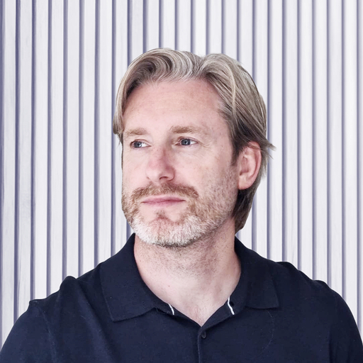

I elevatebuild
design teams — turning craft into measurable business impact.

Accomplished design leader with a proven track record of aligning creative strategy with business objectives to deliver high-impact digital experiences. Expert in managing and mentoring diverse, globally distributed teams, with a core focus on fostering talent and driving measurable user acquisition and retention.
A strategic partner to senior leadership, currently leveraging prompt-driven AI development to bridge the gap between design and technical execution — streamlining the product lifecycle from concept to code.
I lead from evidence and empathy — pairing data with a deep read of customer needs, and translating both into outcomes the business can feel.
Data-led
Decisions anchored in evidence, not opinion — measuring what matters and acting on it.
Customer-centered
Bridging the gap between customer and business needs, so neither is sacrificed for the other.
Outcome-driven
Innovation framed around Jobs to be Done and the outcomes customers are really hiring us for.
Transformational
Inspires and motivates the team through a powerful shared vision — focused on innovation, individual growth, and driving significant organisational change.
Servant
Prioritises the needs, well-being, and professional development of team members — building high trust, loyalty, and a strong, collaborative culture.